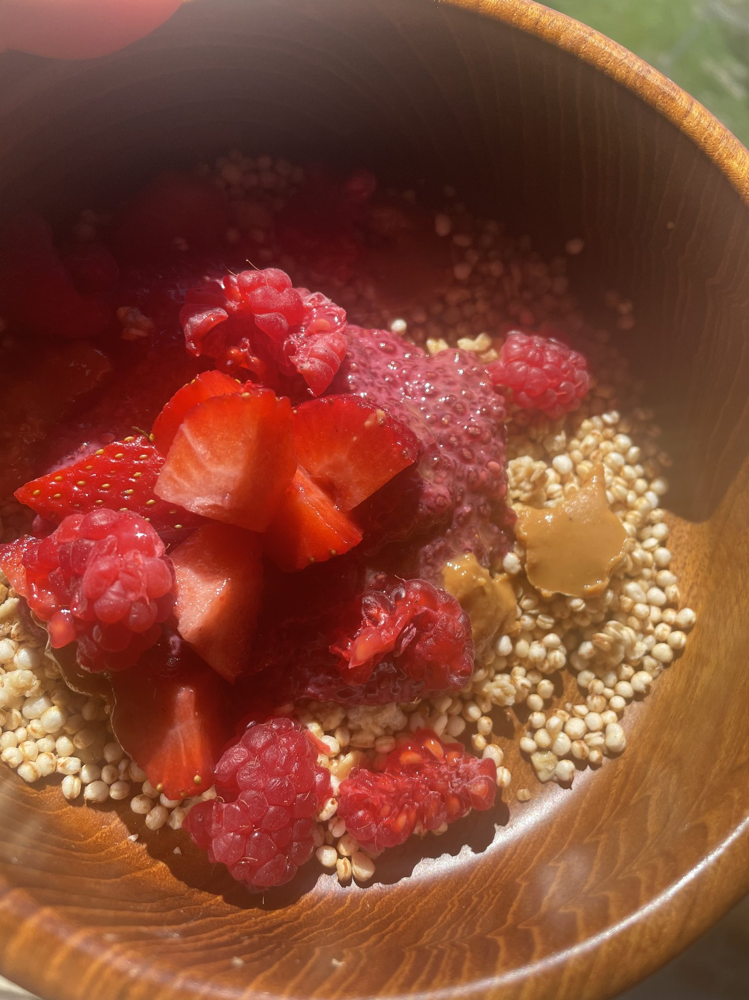

Puding de chía
Ingredients
2×
- 1 taza de leche de coco
- 0.25 taza de semillas de chía
- 1.5 cdas de miel
- 0.25 cdta de sal
- canela
- fresas
- chocolate puro en tableta
- avena
- coco
- 1 plátano
- 1 puñado de fresas
- 1 trozo de remolacha fresca
- 560 ml de leche vegetal

Preparación
Paso 1
En un recipiente, mezclar bien 1 taza de leche de coco (ver leche de coco), 0.25 taza de semillas de chía, 1.5 cdas de miel, 0.25 cdta de sal y canela al gusto. Por persona: 20g de chía y 200ml de leche vegetal.
Paso 2
Dejar en la nevera 12h, mezclándolo de vez en cuando.
Paso 3
Para decorar: coulant de chocolate fundido o fresas. Para el chocolate, fundir chocolate puro en tableta con aproximadamente la mitad de su cantidad de leche vegetal, removiendo hasta conseguir la textura.
Paso 4
Montar en vaso por capas: fruta, chocolate, puding y por encima fruta, avena y coco.
Consejos
Variante: triturar 1 plátano, 1 puñado de fresas y 1 trozo de remolacha fresca con 560 ml de leche vegetal y después añadir la chía.